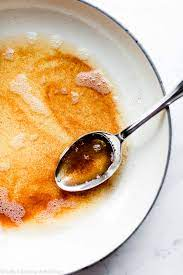

Brown Butter

Description
Butter that has had its milk fats toasted so that it takes on a nutty, toffee-like flavor. This subtly enhanced butter is fantastic in chocolate chip cookies, brownies, or even in simple pasta dishes.
Tips
- Do Not Rush! Butter takes time to brown, and if the heat is too high it will burn quickly and the entire batch will be ruined.
- Use Gentle Heat. You want a steady, gentle heat. I never stray above 4/10 on my electric range. Experiment with what works best on your range but I would not go above a "Medium" heat.
- Use a saucepan with a lightly colored bottom. If you are using a nonstick or cast iron pan you will not be able to see when the milk solids begin to turn color and it will be much more difficult to gauge when to pull the pan off the range.